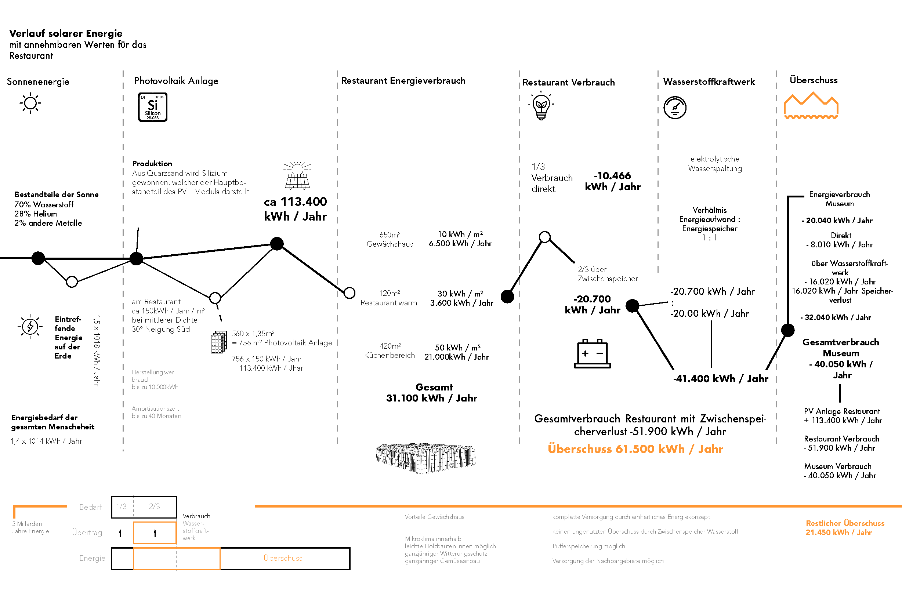

übersicht
mehr
Der Bodensee mit anschließendem Seerhein sind in Konstanz die formende Kraft. Während schematisch Stadteile austauschbar erscheinen kann durch die Nähe zum Wasser ein Gebiet unverkennbar machen. Innerhalb dieses Thesisprojekts war diese besondere Lage und der Umgang mit den Zwischenzonen eine besondere Aufgabe. Der städtebauliche Masterplan des zentrumnahen Industriegebietes soll die Bebauung westlich der neuen Rheinbrücke strukturieren und neu erschließen. Die Uferpromenade wird im Osten angeschlossen und Richtung Wollmatinger Ried weitergeführt. Des Weiteren reagiert das Gebiet auf die neue Ankunftsstelle in Konstanz und das neugeplante Assisi Panorama. Der Städtebau richtet sich nach den entstehenden Frei- und Binnenräumen, welche das geplante Areal strukturieren. Durch den Empfang im Norden werden Industriebauten und Kulturbauten separiert. Auf der ausgewiesenen Fläche wurde als Objektentwurf ein Museum für historische Boote, eine zugehörige Restaurierungswerkstatt und ein Restaurant entwickelt. Das Museum als kultureller Höhepunkt des Rheingartens ist als Neuinterpretation eines Bootshauses ausgebildet. Der aufgepfahlte Holzbau mit verkohlter Lärchenfassade steht als wiedererkennbares Merkmal. Nicht nur von der gegenüberliegenden Flussseite sonder auch die Sicht von der Schänzlebrücke gibt einen einprägsamen Eindruck des Gebäudes. Der schwarze Holzbau ist teilweise auf Land und zu Großteil auf dem Wasser errichtet. Mit der durch Glas abgetrennten Dreiteilung des Gebäudes erhält man eine klare Gliederung in den Gebäudefunktionen. Als Besucher des Museums schreitet man durch die dunkle Fassade in einen hellen Innenraum und wird im Museum für historische Boote empfangen. Der mittlere und größte Ausstellungsraum ist ein Kaltraum, welcher nur auf Stegen begangen wird. Als Höhepunkt des Museum schwimmt eine Lädine, das auf dem Bodensee typische historische Transportsegelschiff, in mitten der großen Raums. Der introvertierte Raum besitzt keinen direkten Ausblick auf Augenhöhe, sonder wird lediglich durch die seitlich angesiedelten Glasbereiche und die Wasserreflexionen belichtet. Über zwei Stockwerke kann man das historische Segelschiff aus verschiedenen Betrachtungswinkel begutachten. Die Wasserspiegelungen holen den Außenraum in das Gebäude. Im dritten Satteldachgebäude schließt sich die Ausstellung ebenfalls über zwei Stockwerke an. Das Museum kann über einen ungezwungenen Rundweg begangen werden und schließt mit einem Besuch im Museumsshop ab. Verlässt man das Museum befindet man sich auf dem in sich geschlossenen Museumsplatz. An diesem schließt die zugehörige Restaurierungswerkstatt an. Dieser Massvibau fasst den Museumsplatz und leitet gleichzeitig das Gebiet Rheingarten von Norden ein. Das Restaurant ist der Schlüsselbau zwischen Kultur- und Industriebauten. Angelehnt an die lokal ansässige Gemüselandwirtschaft ist die Gebäudehülle als Gewächshaus ausgebildet. Die innenliegende Holzkonstruktion trägt diese Hülle. Im Innenraum sind leichte Holzständerbaukuben errichtet, welche durch den Schutz aus Glas in simpler Bauweise mit einem geringem Dämmwert ausgebildet werden können. Neben den verschieden Zonierungen und dem ganzjährigen direktem Gemüseanbau ist das Restaurant ein energieeffizentes Konzepthaus. Die südlich ausgerichteten Dachflächen können durch unterschiedlich dichte Photovoltaikpaneele genug Energie erzeugen um, trotz Zwischenspeicherung über ein Wasserstoffkraftwerk, das Restaurant, das Museum und eine Bürofläche mit ca 500 Quadratmetern das ganz Jahr über mit erneuerbarer Energie zu versorgen. Durch die großzügig öffenbar Außenhülle findet eine natürliche Belüftung bei angenehmen Außentemperaturen statt. Die Kühlung und Heizung wird über integrierte Verdunstungskühler und Infrarotheizungen geregelt. Die leichte und funktionale Hülle erschafft einen witterungsgeschützen Aussenraum mit verschiedenen Zonierungen innerhalb des Restaurants. Diese Atmosphäre kombiniert mit angepflanzten und frisch zubereitete Lebensmitteln hinterlässt das Restaurant Rheingarten eine ganz eigenen und lokal verankerten Eindruck.
masterplan

mehr
Der städtebauliche Masterplan richtet sich an erster Stelle nach den Freiräumen und den entstehenden Binnenräumen. Das Bebauungsgebiet Rheingarten, agiert als Bewegungsraum der Uferpromenade weißt jedoch gezielte Ortraum-Qualitäten auf. Als neugeplanter Ankunftsort für Konstanz reagiert das zentrumsnahe Industriegebiet als Ankunft und Verteiler. Die im Osten des Gebiets angesiedelten Kulturbauten bieten dem Besucher eine direkte Anlaufstelle, während im Westen reine Gewerbebauten entstehen. Der spannende Raum unterhalb der Brücke wird als Freizeitsportanlage umgenutzt. Für den Promenadenfußgänger wird das Bebauungsgebiet von Osten durch ein Schaugewächshaus eingeleitet, welches an den in sich geschlossenen Museumsplatz anschließt. Das introvertierte Museum ist als Neuinterpretation eines Bootshauses der kulturelle Höhepunkt des Gebiets. Gegenüber wird das denkmalgeschützte Gebäude erweitert und zur ehemaligen Gastronomienutzung zurückgeführt. Das Café steht als Anlaufstelle und agiert zwischen Museum, Museumswerkstatt mit Schaufenster und Promenadenspaziergänger. Durch den neugeplanten Busbahnhof unterhalb der Schänzlebrücke und das Assisi Panorama ist eine weitere Ankunftsstelle zu Fuß aus Norden unerlässlich. Der Ankommende wird mit einem Blick auf den Seerhein in das Gebiet eingeleitet und kann auf direktem Weg zum gewünschten Zielort. Das anschließende, als Gewächshaus ausgebildete, Restaurant stellt ein Schlüsselgebäude zwischen Kultur- und Industriebauten dar. Im Westen des Bebauungsgebiet erschließt der zur Straße gerichtete Gewerbehof die Industriebauten. Ein Wasserstoffkraftwerk agiert als Zwischenspeicher der neugewonnen solare Energie.
museum
mehr
restaurant
mehr


werkstatt
mehr